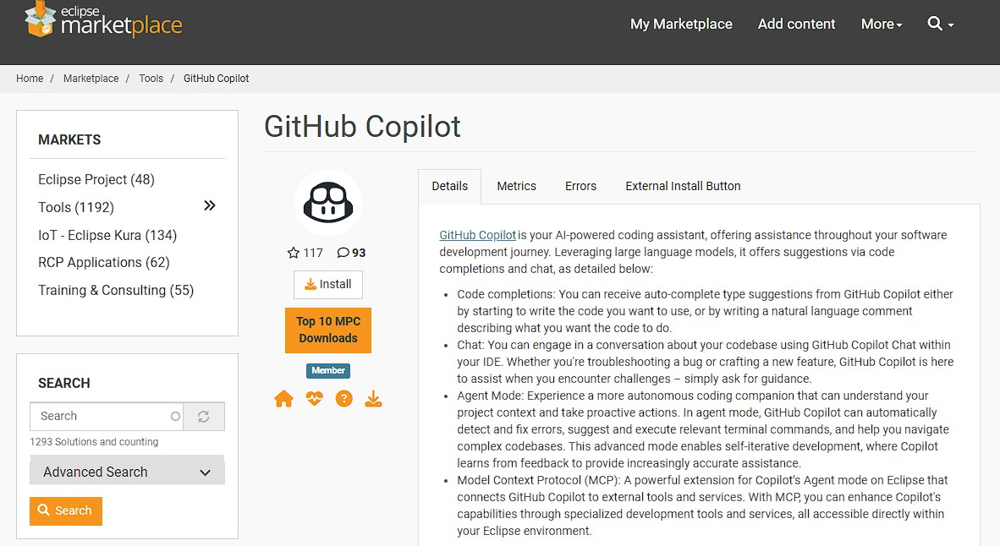

GitHub Copilot for SAP Developers — Hands-On Lab Guide
Duration: ~60 minutes of hands-on exercises (within a ~2.5-hour workshop)
Format: Step-by-step lab exercises aligned to workshop sections
Audience: SAP developers, BTP/extension developers, and integration engineers
Sample: capire/bookshop — the SAP CAP bookshop, which runs locally with an in-memory database (no live SAP backend required)
Companion documents: Workshop Guide · Slides. This lab can be completed standalone.
Important: Labs 1–3 use the SAP Cloud Application Programming Model (CAP) bookshop sample — a first-party SAP framework that runs entirely on your laptop, so it is genuinely SAP yet needs no S/4HANA backend. The optional Lab 4 covers the real ABAP-in-Eclipse experience over SAP sample source — no live SAP backend required, though a connected SAP system unlocks the advanced steps.
Lab Overview
These labs translate the workshop's live demos into hands-on practice. You will use GitHub Copilot to understand, build, harden, test, and document the SAP CAP bookshop service — representative of the side-by-side extension and service work many SAP teams own today — then prepare the change for review.
Prerequisites
| Requirement | Details |
|---|---|
| GitHub Account | With Copilot Free, Pro, Business, or Enterprise license |
| VS Code | Latest stable (or Insiders for preview features) |
| Copilot Extension | GitHub Copilot + GitHub Copilot Chat extensions installed |
| Node.js | Version 18 or higher |
| SAP CDS toolkit | npm install -g @sap/cds-dk |
| Sample project | capire/bookshop (SAP CAP bookshop) |
Setup Checkpoint
Before starting, ensure your environment is ready:
git clone https://github.com/capire/bookshop
cd bookshop
npm install
npm install -g @sap/cds-dk
cds watch
- ✅
cds watchserves the OData service (default http://localhost:4004) - ✅ The in-memory database loads sample books and authors
- ✅ Copilot extension active in VS Code
Lab Summary
| Lab | Workshop Section | Duration | Exercises |
|---|---|---|---|
| 1 | Section 4: SAP CAP Development | 30 min core + 10 min optional | 4 core exercises + 1 optional stretch |
| 2 | Section 5: Prompting & Context Engineering | 20 min | 3 exercises |
| 3 | Section 6: Future-State Architecture | 10 min | 1 exercise |
| 4 (optional) | Section 3: ABAP in Eclipse | 30 min | Setup + 4 core exercises over sample source + 1 optional (live system) |
Lab 1: SAP CAP Development in VS Code (30 min)
Workshop Section: 4 — Live Demo: SAP-Adjacent Development in VS Code
Exercise 1.1 — Explain the CAP Project (7 min)
Objective: Use Copilot to build a mental model of the SAP CAP bookshop.
Steps
Step 1: Open the Chat panel
Open the Chat panel (Ctrl+Shift+I).
Step 2: Ask Copilot to explain the project
@workspace Explain this CAP project — the data model in db/, the services in srv/, and how they connect.
Step 3: Drill into the catalog service
Open srv/cat-service.cds (and its handler if present) and ask:
Explain what the CatalogService exposes and summarize the business logic in plain English.
Step 4: Evaluate
- Did Copilot correctly identify the entities (Books, Authors) and services?
- Did it explain how the CDS model maps to the OData service?
Success Criteria
- ✅ Got an accurate summary of the project structure (db / srv / app) with
@workspace - ✅ Received a plain-English explanation of a service method
- ✅ Identified at least one dependency or integration point
Exercise 1.2 — Build a CAP Action (8 min)
Objective: Generate a new CAP service action through context-driven prompting.
Steps
Step 1: Ask for the action
In the Chat panel, with the catalog service open:
In srv/, add a custom action 'submitOrder(book, quantity)' to the CatalogService that reduces the book's stock and rejects orders that exceed available stock.
Step 2: Refine with a follow-up
Return the remaining stock in the response and make the handler async.
Step 3: Review the result
Confirm the action is declared in the .cds file and implemented in the service handler (.js), matching CAP conventions.
Success Criteria
- ✅ A
submitOrderaction was declared and implemented - ✅ A follow-up prompt refined the behavior
- ✅ The result follows CAP conventions (CDS declaration + handler)
Exercise 1.3 — Add Validation & Error Handling (8 min)
Objective: Make the action production-minded without writing boilerplate by hand.
Steps
Step 1: Select the handler
Select the submitOrder handler you generated in Exercise 1.2.
Step 2: Prompt for hardening
Add validation and a clear error message when quantity is not a positive integer or the book does not exist. Use the CAP req.error API.
Step 3: Verify
Restart cds watch and exercise the action via the served OData endpoint or the test runtime to confirm errors are returned correctly.
Success Criteria
- ✅ Validation was added using the CAP
req.errorpattern - ✅ Invalid quantity and missing-book cases return clear errors
- ✅ The service still starts and serves under
cds watch
Exercise 1.4 — Generate Tests (7 min)
Objective: Generate meaningful test coverage including the out-of-stock edge case.
Steps
Step 1: Generate tests
Select the submitOrder action and prompt:
Generate tests for the submitOrder action using the CAP test runtime (cds.test), including a successful order and the out-of-stock edge case. If package.json does not already have a test script, add one that runs these tests.
Step 2: Confirm the test script
Open package.json and confirm Copilot added or reused a test script. The upstream bookshop sample may not include one by default, so do not skip this check.
Step 3: Run the tests
npm test
Step 4: Expand coverage
Add a test for an invalid (negative) quantity and for a non-existent book.
Success Criteria
- ✅ Tests were generated using
cds.test - ✅ The out-of-stock edge case is covered
- ✅ Tests run successfully
Exercise 1.5 — (Optional Stretch) Add a Fiori UI with the SAP MCP Servers (10 min)
Objective: Use SAP's official @sap-ux/fiori-mcp-server together with @ui5/mcp-server and @cap-js/mcp-server to scaffold a real SAP Fiori elements UI on top of the CAP bookshop service.
Note: This requires registering MCP servers with Copilot. The UI5 MCP server requires Node.js 20.17.0, 22.9.0, or higher. Skip if your environment locks down MCP configuration or only has the baseline Node.js version for the core lab.
Steps
Step 1: Register the Fiori, UI5, and CAP MCP servers
Add the three servers to your VS Code MCP configuration (.vscode/mcp.json in the project, or your user MCP config):
{
"servers": {
"fiori-mcp": {
"type": "stdio",
"command": "npx",
"args": ["--yes", "@sap-ux/fiori-mcp-server@latest", "fiori-mcp"]
},
"ui5-mcp-server": {
"type": "stdio",
"command": "npx",
"args": ["-y", "@ui5/mcp-server"]
},
"cds-mcp": {
"type": "stdio",
"command": "npx",
"args": ["-y", "@cap-js/mcp-server"]
}
}
}
Step 2: Generate a Fiori elements app
With the bookshop project open and the MCP servers enabled, prompt Copilot in agent mode. The CAP server should help Copilot search the compiled CDS model before generating the UI:
Add a SAP Fiori elements list report app to my CAP project for the Books entity, with an object page for book details.
Step 3: Check UI5 guidelines and preview
Ask Copilot to apply UI5 best practices using the UI5 server, then run the app's most specific npm run watch-* script (from the generated app's package.json) and confirm the Fiori UI renders against the local CAP service:
Review the generated UI5 app against UI5 development guidelines and run the UI5 linter to flag any issues.
Success Criteria
- ✅ The Fiori, UI5, and CAP MCP servers are registered and visible to Copilot
- ✅ A Fiori elements app was scaffolded on top of the CAP bookshop service
- ✅ The generated app previews against the local OData service
- ✅ UI5 guidelines / linting were applied via the UI5 MCP server
Lab 2: Prompting & Context Engineering (20 min)
Workshop Section: 5 — Prompting & Context Engineering
Exercise 2.1 — Vague vs. Context-Rich (7 min)
Objective: Experience how attached context changes output quality.
Steps
Step 1: Run a vague prompt
Fix the catalog service.
Note how generic and assumption-heavy the response is.
Step 2: Run a context-rich prompt
@workspace #file:srv/cat-service.cds Add a validation to the submitOrder action so quantity must be a positive integer; return a clear CAP error when it isn't.
Step 3: Compare
- How much more precise was the second response?
- Did the context-rich prompt reference real entities and actions from the file?
Success Criteria
- ✅ Ran both a vague and a context-rich prompt
- ✅ Observed a clear improvement in precision and relevance
- ✅ The context-rich response referenced actual code from the attached file
Exercise 2.2 — Plan-First Prompting (7 min)
Objective: Reduce rework by asking for a plan before code.
Steps
Step 1: Ask for a plan
@workspace I want to add pagination to the Books listing in the CatalogService. Give me a step-by-step plan before writing any code.
Step 2: Review and adjust
Read the plan. Reply with any corrections or constraints.
Step 3: Implement from the approved plan
Implement step 1 from that plan.
Success Criteria
- ✅ Received a structured plan before any code
- ✅ Refined the plan with a follow-up
- ✅ Implemented at least one step from the approved plan
Exercise 2.3 — Repository Instructions for SAP Standards (6 min)
Objective: Encode team conventions so Copilot applies them automatically.
Steps
Step 1: Create the instructions file
Create .github/copilot-instructions.md with a few team standards, for example:
# Project conventions
- Service definitions live in `srv/` as `.cds`; handlers as matching `.js` files.
- Expose entities through services — never query the database model directly from clients.
- Validation errors use the CAP `req.error(code, message)` API.
- Prefer async/await in custom handlers.
Step 2: Test the effect
Ask Copilot to create a new service method and confirm it follows the conventions without being told.
Success Criteria
- ✅ Created
.github/copilot-instructions.mdwith SAP CAP conventions - ✅ A new generation followed the conventions automatically
Lab 3: Future-State Architecture (10 min)
Workshop Section: 6 — Future-State Architecture: SAP-Connected Copilots & Agents
Exercise 3.1 — Map a Use Case to the Architecture (10 min)
Objective: Translate the reference architecture into a concrete, low-risk pilot idea.
Steps
Step 1: Pick a read-focused use case
Choose a conversational-retrieval scenario relevant to your team (e.g., "look up order status from SAP").
Step 2: Ask Copilot to draft the design
Draft a high-level design for a read-only copilot that retrieves order status. Show the layers: user surface, agent layer, API management, SAP BTP API exposure, and SAP backend. List the security considerations at each layer.
Step 3: Summarize for review
Summarize this design as a one-page proposal with prerequisites, risks, and a suggested first milestone.
Success Criteria
- ✅ Selected a read-focused, low-risk use case
- ✅ Produced a layered design naming the security considerations
- ✅ Generated a one-page proposal with prerequisites and a first milestone
Lab 4 (Optional): ABAP in Eclipse (30 min)
Workshop Section: 3 — ABAP Support Overview
Important: Exercises 4.1–4.4 use ABAP source files from the SAP sample repositories, so Copilot can explain, modernize, test, and run Agent mode without a live SAP backend. Exercise 4.5 needs a connected SAP system (or ABAP trial). Do not improvise ABAP syntax — always work from the real sample source.
Lab 4 Setup — Eclipse, ADT, Copilot & the ABAP Samples
Note: This setup assumes no prior Eclipse experience. If your facilitator pre-installed the environment, confirm each checkpoint and skip ahead.
Step 1: Install Eclipse
Download and install Eclipse IDE for Java Developers from https://www.eclipse.org/downloads/packages/. Launch it and choose any workspace folder when prompted.
Step 2: Install ABAP Development Tools (ADT)
In Eclipse: Help → Install New Software…, then in Work with enter the ADT update site:
https://tools.hana.ondemand.com/latest
Select ABAP Development Tools, accept the license, and continue. When Eclipse warns about the unsigned javax.wsdl bundle, choose Trust Selected (do not enable "always trust all"). Restart Eclipse when prompted.
Step 3: Install the GitHub Copilot plugin
In Eclipse: Help → Eclipse Marketplace…, search "GitHub Copilot", and install GitHub Copilot (a single plugin — chat is built in). Restart Eclipse. Use the latest version (0.20.0+) so Agent/Plan modes, MCP, prompt files, skills, and custom agents are available.

Step 4: Sign in and verify
Click the Copilot icon in the toolbar and authenticate with your GitHub account. Open Copilot Chat and send Hello — a reply confirms the Copilot language server is running.
Note: If chat reports a language-server error, sign in first and restart Eclipse — the error usually clears once authentication completes.
Step 5: Clone the three ABAP sample repos
Pick any folder you like (for example a sap-samples directory) and clone all three:
mkdir sap-samples && cd sap-samples
git clone https://github.com/SAP-samples/abap-cheat-sheets
git clone https://github.com/SAP-samples/abap-platform-refscen-flight
git clone https://github.com/SAP-samples/cloud-abap-rap
Step 6: Add the repos to your Eclipse workspace
In Eclipse: File → Import… → General → Projects from Folder or Archive, click Directory…, and select a cloned repo folder. If Eclipse detects a project, select it and click Finish. If a repo has no Eclipse project metadata, use File → Import… → General → File System and import the folder instead — Copilot can still read and reason over the ABAP source either way. Repeat for all three repos.
Success Criteria
- ✅ Eclipse, ADT, and the GitHub Copilot plugin are installed and you are signed in
- ✅ Copilot Chat responds to a
Helloprompt - ✅ All three sample repos are visible in the Eclipse workspace
Exercise 4.1 — Explain Unfamiliar ABAP (6 min)
Objective: Use Copilot to understand an unfamiliar SAP application quickly.
Steps
Step 1: Open a source file
From abap-platform-refscen-flight, open an ABAP class, report, or behavior definition.
Step 2: Ask Copilot to explain it
What is this program doing?
Step 3: Trace the flow and connect it to SAP
Draw the execution flow, then explain it to a developer who knows C# but not ABAP.
Success Criteria
- ✅ Copilot produced an accurate plain-English summary
- ✅ You received an execution-flow description
- ✅ The explanation bridged ABAP concepts to familiar ones
Exercise 4.2 — Modernize Legacy ABAP (6 min)
Objective: Use Copilot to modernize older ABAP syntax and learn the changes.
Steps
Step 1: Open a source file
From abap-cheat-sheets, open a class that demonstrates classic ABAP statements.
Step 2: Ask for a modernized version
Refactor this using modern ABAP 7.5+ syntax.
Step 3: Ask Copilot to justify the changes
Explain every modernization change you made and why it is an improvement.
Success Criteria
- ✅ Copilot produced a modern ABAP 7.5+ rewrite (inline declarations, constructor expressions, etc.)
- ✅ Each change was explained
- ✅ You reviewed the result for correctness before trusting it
Exercise 4.3 — Generate ABAP Unit Tests (6 min)
Objective: Use Copilot to scaffold test coverage and surface edge cases.
Steps
Step 1: Open a class with business logic
Use a class from abap-platform-refscen-flight or cloud-abap-rap.
Step 2: Generate tests
Generate ABAP Unit tests for this class.
Step 3: Expand coverage
Identify edge cases that should be tested and explain why each one matters.
Success Criteria
- ✅ An ABAP Unit test scaffold was generated
- ✅ Copilot listed meaningful edge cases
- ✅ You confirmed the tests match the class's public interface
Exercise 4.4 — Agent Mode & Custom Instructions (6 min)
Note: The Eclipse plugin (0.20.0+) supports Ask, Agent, and Plan modes, MCP, custom instructions, prompt files, skills, and custom agents. This exercise stays backend-free on the sample source. Agent behavior on ADT's generated/virtual files can vary — use the latest plugin and review every edit.
Steps
Step 1: Add a custom instruction
Create .github/copilot-instructions.md in the sample repo with a team rule, for example:
# ABAP conventions
- Prefer modern ABAP 7.5+ syntax (inline declarations, constructor expressions).
- Always check sy-subrc after a SELECT.
Step 2: Run Agent mode
Open the Copilot chat, select Agent mode, and prompt:
Add a small helper method to this class that validates its key input, following our conventions.
Step 3: Review and apply
Inspect each proposed edit before accepting. Confirm the result reflects your custom instruction.
Success Criteria
- ✅ Agent mode proposed edits (single or multi-file)
- ✅ The output followed your
.github/copilot-instructions.mdrule - ✅ You reviewed every change before accepting
Exercise 4.5 — (Optional, live SAP system) Comment-Driven Generation & Query Optimization (7 min)
Important: This exercise assumes a connected SAP system or ABAP trial and the ADT perspective. Skip it if you only have the sample source files.
Steps
Step 1: Comment-driven generation
In an ABAP source, type a guiding comment and let Copilot suggest:
* TODO: select all flights for a given carrier from SFLIGHT into an internal table
Press Tab to accept or Esc to dismiss, then review the generated SELECT.
Step 2: Chat-assisted optimization
Select an existing SELECT statement and ask:
Optimize this SELECT query and explain why it is more efficient.
Step 3: Validate
Run the result through your existing ATC and code-review gates before adopting it.
Success Criteria
- ✅ A relevant
SELECTwas suggested from the comment and reviewed against the data dictionary - ✅ Received an optimization suggestion with an explanation
- ✅ Validated the change through normal review (ATC / transport / code review)
Lab guide for the GitHub Copilot for SAP Developers Workshop